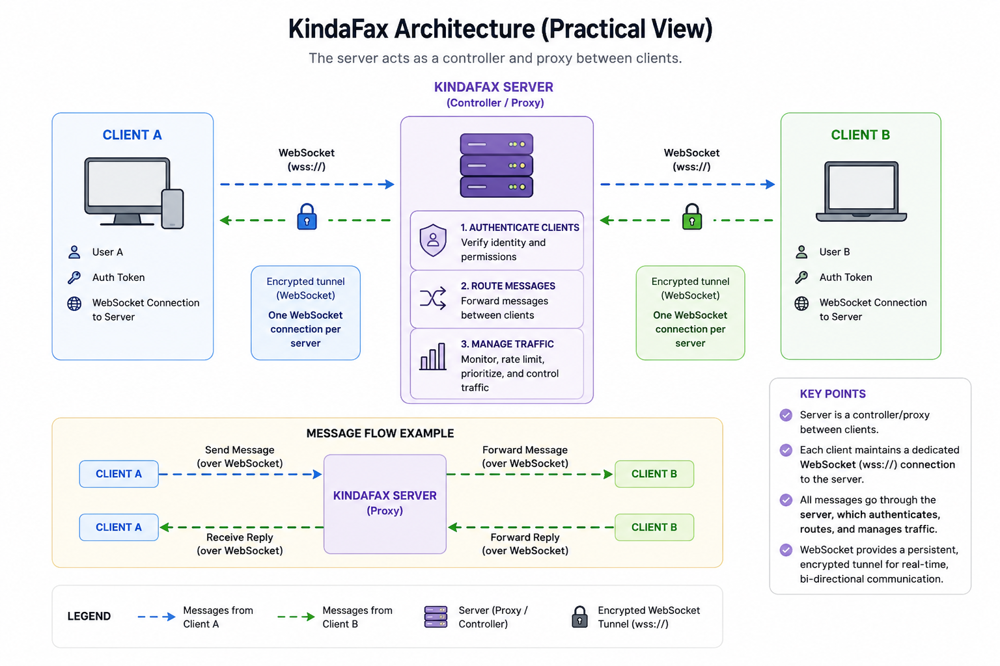

Server¶
The main component of KindaFax. Learn how to host and maintain KindaFax, on your hardware.
Overview¶
The server is a controller, that acts as a proxy between multiple clients.
It’s role is to:
Authenticate clients.
Route messages between clients.
Manage traffic.
KindaFax uses the WebSocket protocol, to create a tunnel between each client on the network. The client will connect to a WebSocket per server they are connected to. It will send and receive messages via this encrypted tunnel.

Example of how clients may be connected to a KindaFax server via a WebSocket connection.¶
Each user is assigned a unique ID consisting of random letters and numbers. This identifier functions similarly to a telephone number and is used to uniquely identify users.
On User A’s first contact with User B, a confirmation message will be sent first. The server will drop all message to User B, until they accept or deny. During this period, User B, can only be contacted via their user ID and not their display name. This is built-in spam pretention.
Features¶
Below is a feature matrix outlining the capabilities of KindaFax, vs other solutions. Please note that this list does not mean that clients support these features, refer to the client’s feature matrix as it may differ.
Feature |
Supported |
Planned |
|---|---|---|
Real-time messaging |
Yes |
|
User authentication |
Yes |
|
Message routing between clients |
Yes |
|
Offline message delivery |
Yes |
|
User identity |
Yes |
|
Message storage |
Yes (Configurable) |
|
Anti-Spam |
Yes |
|
Notifications |
Yes |
|
Privacy First |
Yes |
|
Configurable Behavior |
Yes |
|
Presence status |
Some |
|
Group messaging support |
No |
|
File Sharing |
No |
Licensing¶
KindaFax Server licensed under GNU General Public License.